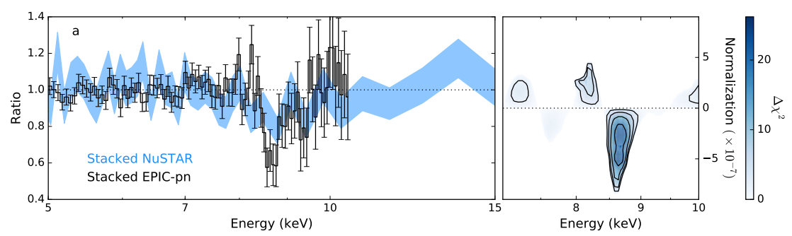

Summary
I spent ten years on the cutting-edge of astrophysics research, working at the university of Cambridge and the European Space Agency. I specialised in the study of black hole accretion, leveraging machine learning to uncover new insights from complex, noisy observational data.
During this time, I was the lead author of 22 publications, and a co-author of over 100 more, including high profile papers in Nature and Nature Astronomy. At the time of writing, these papers have been cited 4600 times, with 10 papers having over 100 individual citations.
Neural Spectroscopy
X-ray spectroscopic modelling generally relies on optimising the parameters of physical or phenomenological spectral models to minimise a fit statistic (e.g. Chi-squared). These models can have tens or even hundreds of parameters, and are not differentiable, so require expensive trial and error based optimisation. This means that parameter estimation on large numbers of spectra becomes very computationally expensive.
In Parker et al. 2022
we explored a neural network based approach to parameter estimation, training the NN to
estimate the parameters of the underlying physical processes without any direct modelling.
This was very promising, resulting in a 1000x improvement in spectral throughput with a
small decline in accuracy.
We explored this further in Sisk-Reynés et al., 2023, where we used a 1D convolutional network to set limits on the presence of dark matter in galaxy clusters. In this study, we showed that the machine learning approach could reduce the negative impact of calibration uncertainties by ~90%.
Variance Spectroscopy
In 2016, I led the team that discovered the signatures of absorption from a relativistic outflow in one of the most variable supermassive black holes (nature.com/articles/nature21385). This opened a new window for studying these extreme phenomena, through their time series.
In a follow-up work, I showed that the atomic absorption lines produced by these outflows are more time-variable than the spectral continuum, so are enhanced in variability spectra. This provides a more sensitive detection method in variable sources, which we demonstrated in a survey led by my student: Igo et al., 2020.
These variability signatures can also be used to probe properties of outflows that are inaccessible with conventional spectroscopy. FINISH THIS